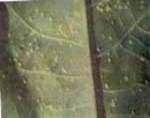

| Home |
| CASTOR |
mAJOR DISEASES |
| 1. Seedling blight |
| 2. Rust |
| 3. Leaf blight |
| 4. Brown leaf spot |
| 5. Powdery mildew |
| 6. Stem rot |
| 7. Bacterial leaf spot |
| 8. Wilt |
| Questions |
| Download Notes |
CASTOR :: MAJOR DISEASE :: RUST
Rust – Melampsora ricini
Symptoms
Minute, orange-yellow coloured, raised pustules appear with powdery masses on the lower surface of the leaves and the corresponding areas on the upper surface of the leaves are yellow. Often the pustules are grouped in concentric rings and coalesce together to for drying of leaves.
|  |
Powdery mass covering entire leaf |
Pathogen
The pathogen produces only uredosori in castor plants and other stages of the life cycle are unknown. Uredospores are two kinds, one is thick walled and other is thin walled. They are elliptical to round, orange-yellow coloured and finely warty.
.jpg){kind=link}
Disease cycle
The fungus survives in the self sown castor crops in the off season. It can also survive on other species of Ricinus. The fungus also attacks Euphorbia obtusifolia, E.geniculataand E.marginata. The infection spreads through airborne uredospores.
Management
- Rogue out the self-sown castor crops and other weed hosts.
- Spray Mancozeb at 2kg/ha or Propioconazole 1l/ha.